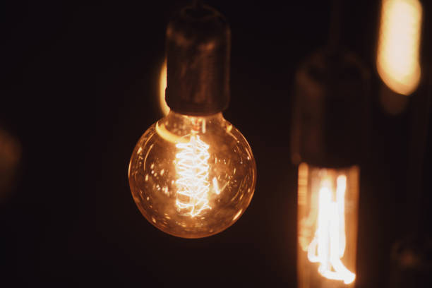
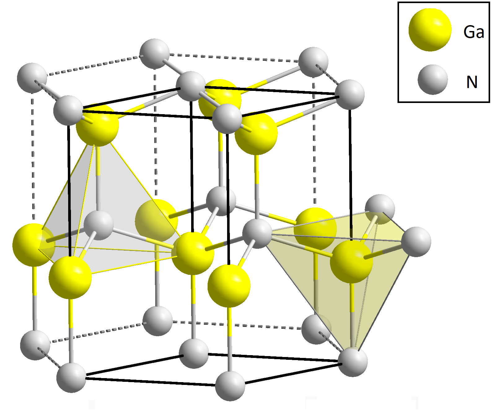
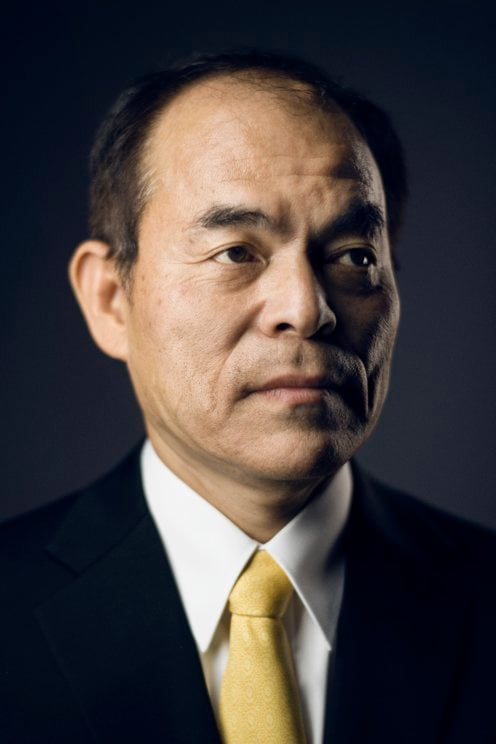
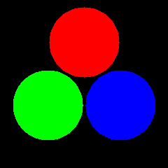

A Revolução Tecnológica e Comportamental da Luz
Aluizio Monteiro Schuster Jr.
Eduarda Horning Bzunek
Júlio César Ferreira
José Otavio C. Raimundo
João Gualberto Boissa Netto
João Matheus Pianaro
João Vitor da Mota Mattos
Yasmin Dos Santos Pereira

Diodos emissores de luz dependem do espaçamento de energia eletrônica (Bandgap).
Semicondutores baseados em fósforo e arsênico resolveram as ondas longas facilmente.
Sem o Azul, a síntese do branco e os displays digitais eram impossíveis.

Três décadas separaram o LED verde do azul.
Grandes corporações mundiais abandonaram as pesquisas e rotularam o Nitreto de Gálio (GaN) como inviável.

Enquanto a comunidade científica global apostava no Seleneto de Zinco (ZnSe), Nakamura insistiu no desafiador Nitreto de Gálio (GaN).
Desobedeceu ordens diretas da liderança para focar na execução prática.
* Lm/W (Lúmens por Watt): Quantidade de luz visível emitida para cada Watt de energia elétrica consumida.
Universidade de Nagoya
Os pesquisadores Isamu Akasaki e Hiroshi Amano buscaram criar a base teórica e entender a física da emissão de luz, trabalhando com rigor, mas pouca verba.
Nichia Corporation
O engenheiro Shuji Nakamura tinha a missão de transformar o material em um produto que pudesse ser vendido rapidamente, assumindo enormes riscos financeiros.
Eles trilharam caminhos completamente opostos, mas os três dividiram o Prêmio Nobel de Física!
A consolidação do RGB permitiu telas retroiluminadas de alta definição, redução drástica do consumo global de energia e viabilizou a infraestrutura visual moderna.
Obrigado pela atenção!
